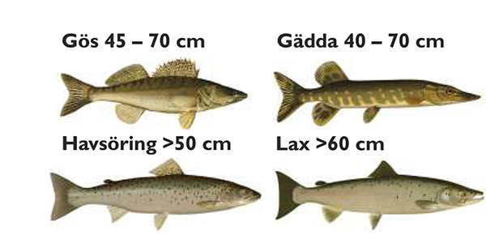
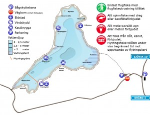
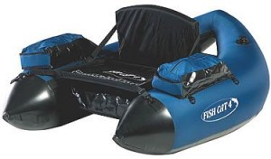
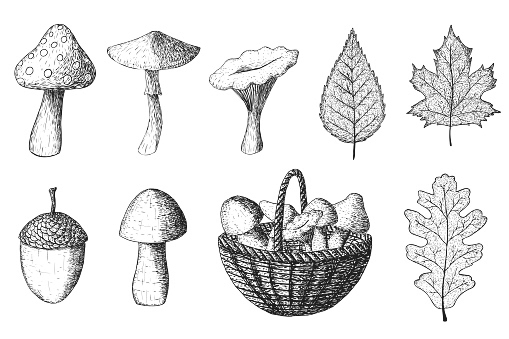

FISKEREGLER

Fiskeregler Lilla Lövsjön
- Lilla Lövsjön är öppen för flugfiske året runt vid isfri sjö. Allt isfiske är förbjudet.
- Ett fiskekort är giltigt i 24 timmar och är personligt (Pris 200 SEK) (Flytring 250 SEK).
- Vid fiske skall giltigt och fullständigt ifyllt fiskekort medföras.
- Giltigt legitimation skall medföras.
- Max antal är 2 st regnbågar per kort. Om 2 st regnbågar är upptagna är kortet förbrukat och
nytt kort måste lösas.
- Fiskekortsinnehavaren är skyldig att följa de anvisningar som finns på fiskekortet och som kan
meddelas vid kortförsäljningsställena eller som anges på anslag vid fiskevattnet.
- Endast flugfiske med traditionell flugfiskeutrustning är tillåtet. Allt annat fiske är
förbjudet, även fiske med kastkula eller liknande.
- Max ett spö per fiskare åt gången.
- Fiske får endast ske från land eller genom vadning med undantag för flytringsfiske under viss
period (Se nedan).
- Flytringsfiske är tillåtet året runt vid isfri sjö med undantag för utloppsviken som ej får
beträdas av flytringar (Pris Flytringskort 250 SEK). Flytring med åror är ej tillåtet.(Se karta
nedan).
Barn under 16 år får fiska utan avgift i sällskap med målsman med giltigt fiskekort. Dock gäller
2 st regnbågar per kort.
KARTAN OM LILLA LÖVJÖN

Flytringsfiske är tillåtet året runt vid isfri sjö med undantag för utloppsviken som ej får
beträdas av flytringar. Se bilden ovan.

ALLEMANSRÄTT

Lite om Allemansrätt och allemansskyldighet:
Allemansrätten ger oss rätt att ströva fritt i skog och mark, bada eller färdas över sjöar och
vattendrag. Allemansrätten innebär också en skyldighet att ta ansvar och värna om den natur vi
utnyttjar samt visa hänsyn mot markägare och andra människor.
Allemansrätten är ingen lag utan bygger på sedvänjor ur våra landskapslagar. I naturvårdslagens
första paragraf heter det att naturen är ”tillgänglig för alla enligt allemans-rätten”.
Naturvårdslagen innehåller också föreskrifter som inskränker allemansrätten. Inom ett
naturreservat kan det t.ex. vara förbjudet att tälta, göra upp eld eller plocka blommor.
- Vi får plocka svamp, vildväxande bär och blommor samt nedfallna grenar och torrt ris på marken.
Vissa blommor är fridlysta och får inte plockas. Vi får inte bryta grenar eller ta näver och
bark på växande träd och buskar.
- Jakt ingår inte i allemansrätten och man får heller inte röra fåglars bon och ägg. Lämna alltid
djurens ungar i fred. För fiske i sjöar erfordras som regel särskilt tillstånd och
fiskekort.
- Hundar skall alltid hållas under sådan uppsikt att de ej kan skada vilda djur. Under tiden 1
mars – 20 augusti får hundar inte springa lösa i skog och mark.
- Ett dygn får vi tälta i skog och mark om det ej medför skada och sker på behörigt avstånd från
boningshus. Om man tältar i grupp bör man alltid fråga markägaren om lov, liksom om man ämnar
tälta flera dygn i sträck.
-Vi får gå, cykla, rida och åka skidor över annans mark, men vi får inte passera över nysådd
åker, plantering eller annan mark som kan skadas. Rid inte på markerade stigar och leder eller
på motionsslingor. Gå inte heller i skidspåren.
- Det är förbjudet att köra motorfordon i terrängen. På enskild väg kan en markägare, som själv
underhåller vägen, förbjuda motortrafik.
- Vi får göra upp eld om det inte är minsta risk för brand. Släck elden ordentligt innan du
lämnar platsen. Tag alltid reda på om allmänt eldningsförbud råder.
- Skräpa inte ned. Ställ aldrig soppåsar bredvid en full sopsäck. Djur river sönder den och drar
ut skräpet. Glas, kapsyler och plastpåsar kan orsaka stort lidande om djuren får dem i sig.